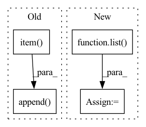

Pattern ID :37668

Before Change
cycle_losses_this_epoch.append(cycle_dist.item())
train_loss = train_loss + cycle_dist
train_losses_this_epoch.append(train_loss.item())
l1_losses_total.append(l1_loss.item())
duration_losses_total.append(duration_loss.item())
pitch_losses_total.append(pitch_loss.item())
After Change
glow_losses_total = list()
duration_losses_total = list()
pitch_losses_total = list()
energy_losses_total = list()
for batch in tqdm(train_loader):
train_loss = 0.0
with autocast():
In pattern: SUPERPATTERN
Frequency: 3
Non-data size: 4
Instances
Fragment ID: 108232050
Project Name: digitalphonetics/ims-toucan
Commit Name: 1a9e79acab3fe68f1ad022bbe1b9837ba2f75aa9
Time: 2023-03-11
Author: lux.florian@gmail.com
File Name: TrainingInterfaces/Text_to_Spectrogram/ToucanTTS/toucantts_train_loop.py
M Class Name: AnonimousClass
N Class Name: AnonimousClass
M Method Name: train_loop(16)
N Method Name: train_loop(16)
M Parent Class:
N Parent Class:
M File Name: TrainingInterfaces/Text_to_Spectrogram/ToucanTTS/toucantts_train_loop.py
N File Name: TrainingInterfaces/Text_to_Spectrogram/ToucanTTS/toucantts_train_loop.py
M Start Line: 94
M End Line: 213
N Start Line: 100
N End Line: 215
'>
Before Change
actions = self.agent.get_actions(observations, env=self.env)
observations, rewards, dones, truncated, infos = env_batch_step(self.env, actions)
terminals_count += np.sum(dones)
cumulative_rewards.append(np.sum(rewards).item())
if all(dones):
observations, info = self.env.reset()
After Change
rewards=rewards,
dones=dones,
)
cumulative_rewards = list(agents_history_maps.cumulative_rewards.values())
if all(dones):
agents_history_maps.terminate_all()
next_observations, info = self.env.reset()
p_bar.update(min(sum(dones), max(0, n_trajectories - sum(dones))))
'>
Fragment ID: 108232048
Project Name: neurotorch/neurotorch
Commit Name: 0470756f489a772da07cd64cfad8a300f24f6bfa
Time: 2022-12-03
Author: 50332514+JeremieGince@users.noreply.github.com
File Name: src/neurotorch/rl/rl_academy.py
M Class Name: RLAcademy
N Class Name: RLAcademy
M Method Name: generate_trajectories(6)
N Method Name: generate_trajectories(6)
M Parent Class: Trainer
N Parent Class: Trainer
M File Name: src/neurotorch/rl/rl_academy.py
N File Name: src/neurotorch/rl/rl_academy.py
M Start Line: 271
M End Line: 301
N Start Line: 211
N End Line: 241
'>
Before Change
// loss = loss_fn(out, data["target"])
// _, batch_preds = torch.max(out.data, 1)
// fin_loss += loss.item()
predicted_list.append(out.mean().item())
target_hr_list.append(data["target"].item())
return target_hr_list, predicted_list
After Change
target_hr_batch = list(data["target"].mean(dim=1, keepdim=True).squeeze(1).detach().numpy())
target_hr_list.extend(target_hr_batch)
predicted_hr_batch = list(outputs.squeeze(2).mean(dim=1, keepdim=True).squeeze(1).detach().numpy())
predicted_list.extend(predicted_hr_batch)
return target_hr_list, predicted_list, fin_loss / len(data_loader)
'>
Fragment ID: 108232056
Project Name: anweshcr7/rhythmnet
Commit Name: 465030f9efb5f86a94572239a5147c1c667f24fd
Time: 2021-02-23
Author: anwesh.marwade@beyondsports.nl
File Name: src/engine.py
M Class Name: AnonimousClass
N Class Name: AnonimousClass
M Method Name: eval_fn(3)
N Method Name: eval_fn(3)
M Parent Class:
N Parent Class:
M File Name: src/engine.py
N File Name: src/engine.py
M Start Line: 37
M End Line: 51
N Start Line: 41
N End Line: 63